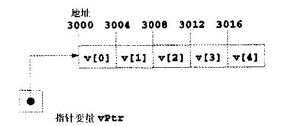
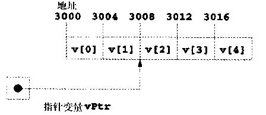

指针是算术表达式、赋值表达式和比较表达式中的有效操作数。但是，通常并不是这些表达式中使用的所有运算符都在指针变量中有效。本节介绍可以用指针操作数的运算符及这些运算符的用法。
只有少量操作可以对指针进行。指针可以自增(++)或自减(--)，整数可以加进指针中(+或+=)，也可以从指针中减去整数(-或-=)，指针可以减去另一指针。
假设声明了数组int v[5]，其第一个元素位于内存地址3000。假设指针vPtr已经初始化为指向数组v[0]，即vPtr的值为3000。图5．18演示了在32位的机器中的这种情况。注意vPtr可以初始化为数组v的指针，如下所示：
vPtr = v;
vPtr = &v[ 0 ]

图5.18 数组v和指向v的指针变量vPtr
如今的大多数计算机都是16位或32位，有些较新的计算机用8字节整数。由于指针算法的结果取决于指针所指对象的长度，因此指针算法与机器有关。
按照传统算法，3000+2得到3002。而指针算法通常不是这样。将指针增加或减去一个整数时，指针并不是直接增加或减去这个整数，而是加上指针所指对象长度的这个倍数。这些字节数取决于对象的数据类型。例如，下列语句：
vPtr += 2；在用4字节内存空间存储整数时得到的值为3008(3000+2*4)。对数组v，这时vPtr指向v[2]如图5．19。如果用2字节内存空间，则上述结果得到3004(3000+2*2)。如果数组为不同数据类型，则上述语句将指针递增指针所指对象长度的2倍。对字符数组进行指针算法时，结果与普通算法相同，因为每个字符的长度为一个字节。

图 5．19经过指针运算之后的vPtr
如果vPtr递增到3016，指向v[4]，则下列语句：
vptr -= 4；
将vPtr复位为3000，即数组开头。如果指针加1或减1，则可以用自增(++)和自减(--)运算符。
下列语句：
++vptr； vPtr++；
将指针移到数组中的下一个位置。下列语句：
--vPtr； vPtr --；
将指针移到数组中的前一个位置。
指针变量还可以相减。例如，如果vPtr包含地址3000，v2Ptr包含地址3008，则下列浯句：
x = v2Ptr - vPtr；
将x指定为vPtr到v2Ptr的元素个数，这里为2。指针算法只在对数组进行时才有意义。我们不能假设两个相同类型的变量在内存中相邻的地址存放，除非它们是数组的相邻元素。
对于不引用数组值的指针采用指针算法通常是个逻辑错误。
将两个不引用同一数组的指针相加或相减通常是个逻辑错误。
使用指针算法时超过数组边界通常是个逻辑错误。
如果两个指针的类型相同，则可以将一个指针赋给另一个指针。否则要用强制类型转换运算符将赋值语句右边的指针值转换为赋值语句左边的指针值。这个规则的例外是void的指针(即void)，该指针是个一般性指针，可以表示任何指针类型。所有指针类型都可以赋给void指针而不需要类型转换。但是，void指针不能直接赋给另一类型的指针，而要先将void指针转换为正确的指针类型。
void*指针不能复引用。例如，编译器知道int指针指向32位机器中的4字节内存,但void指针只是包含未知数据类型的内存地址，指针所指的字节数是编译器所不知道的。编泽器要知道数据类型才能确定该指针复引用时的字节数。对于void指针，无法从类型确定字节数。
除了void*类型外，将一种类型的指针赋给另一种类型的指针而不先将一种类型的指针转换为另一种类型的指针是个语法错误。
复引用void*指针是个语法错误。
指针可以用相等和关系运算符比较，但这种比较只在对相同数组成员进行时才有意义。指针比较是对指针存放的地址进行比较。例如，比较指向同一数组的两个指针可以表示一个指针所指的元素号比另一个指针所指的元素号更高。指针比较常用于确定指针是否为0。